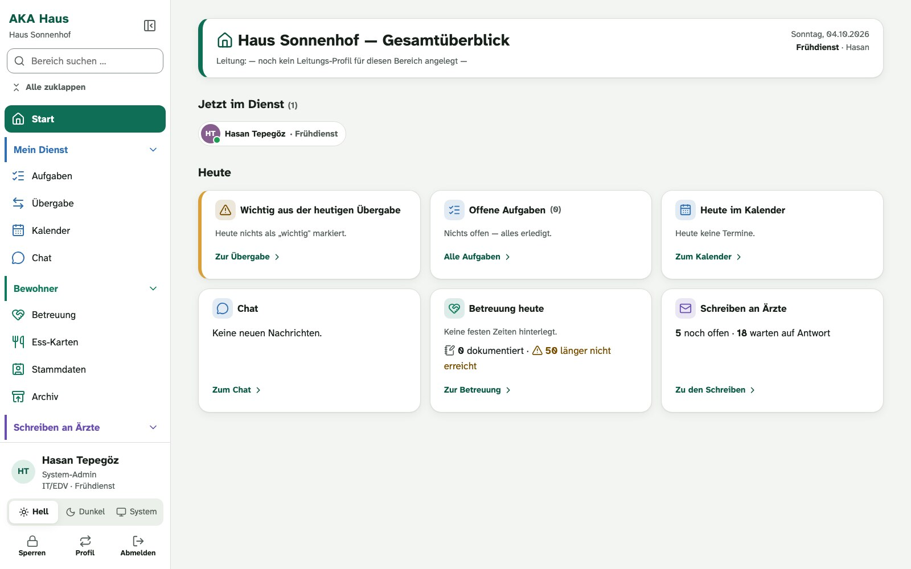
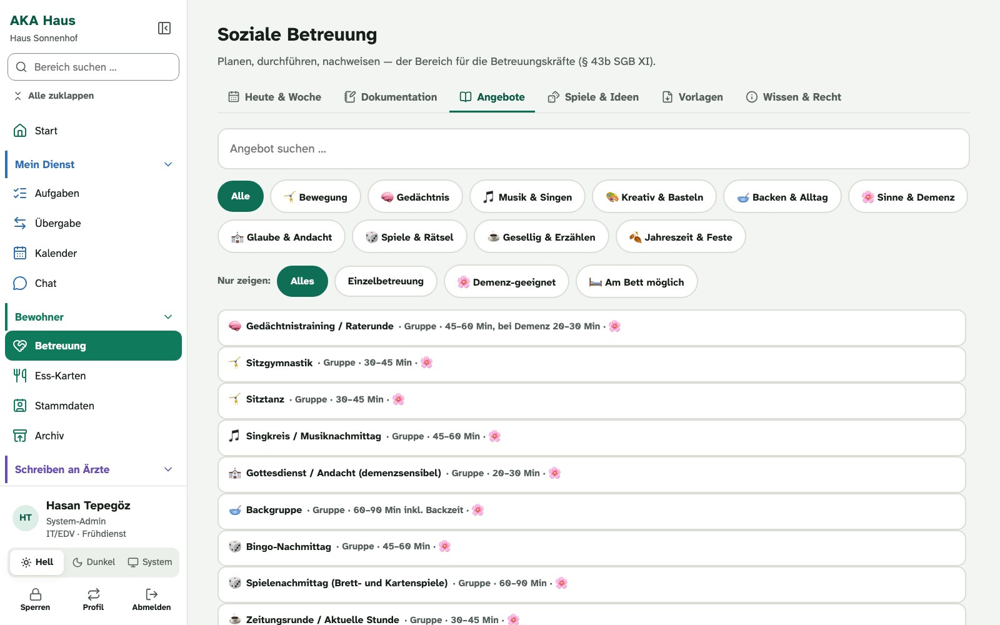
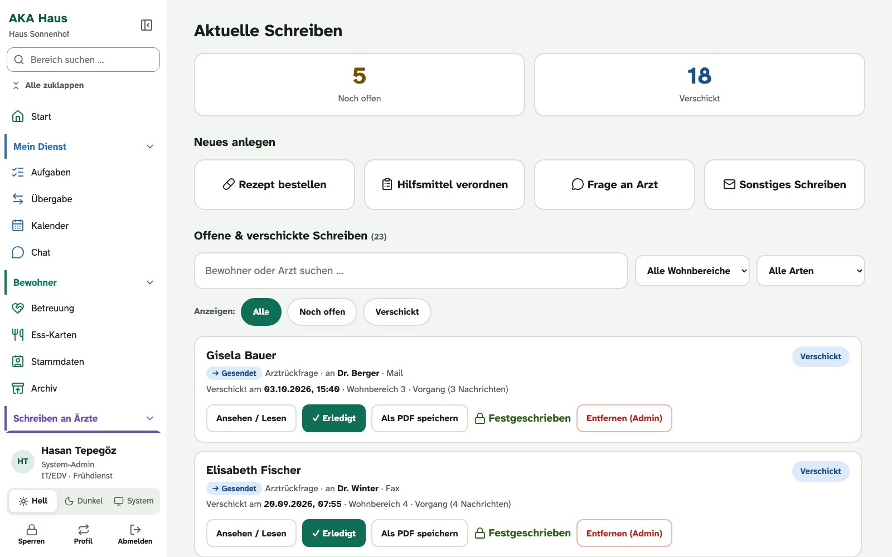
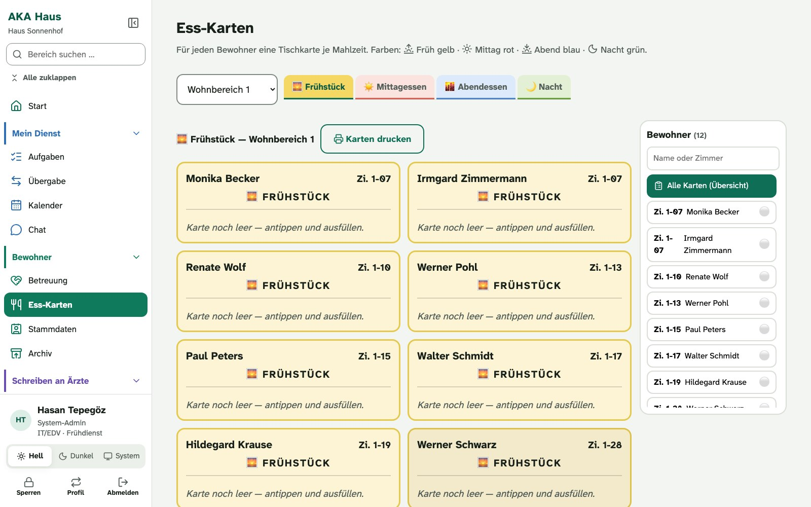
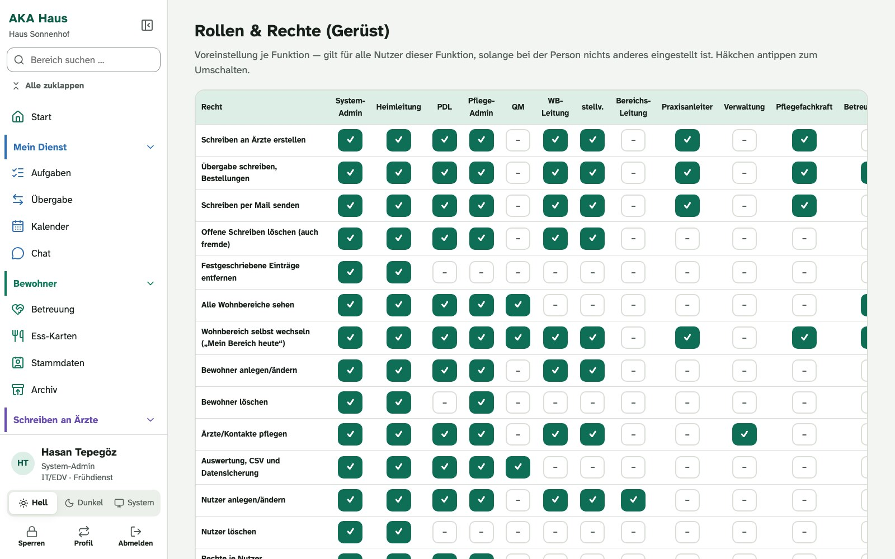
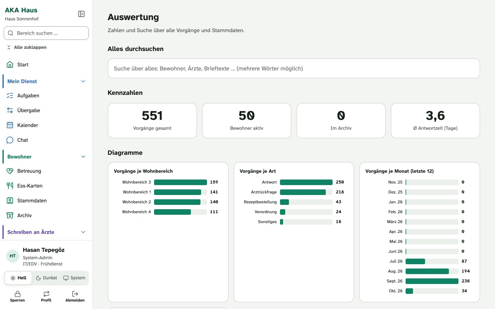
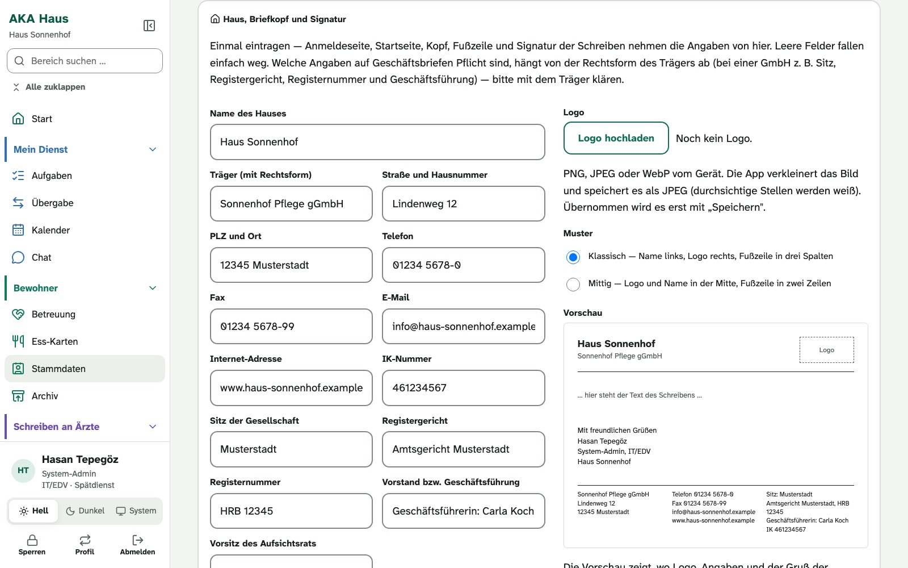
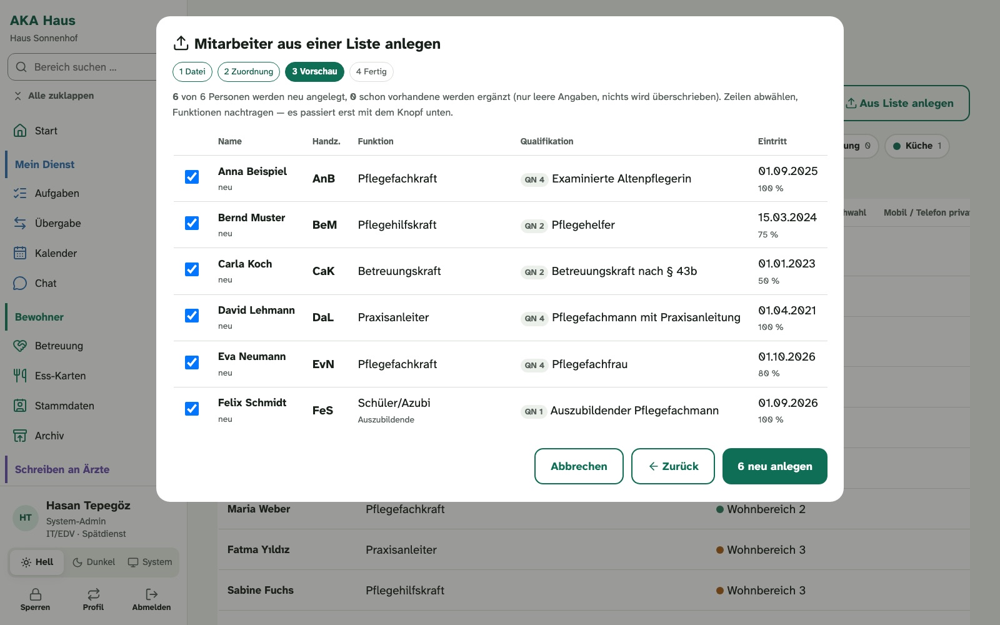

Organisation und Kommunikation im Pflegeheim
Ihre Pflegesoftware dokumentiert die Pflege. AKA Haus übernimmt, was daneben anfällt: Betreuung, Schreiben an Ärzte, Protokolle, Haustechnik, Aufgaben und das Miteinander im Haus. Für den gemeinsamen Betrieb ist ein zentraler Rechner in Ihrem Hausnetz vorgesehen.
In Entwicklung · noch nicht im Echtbetrieb · Piloteinrichtungen gesucht · Vorführung auf Anfrage
So sieht es aus
Alle Bilder zeigen die Übungsversion. Haus, Bewohner und Vorgänge sind erfunden.








Was AKA Haus abdeckt
Vieles im Heim läuft heute auf Papier, über Zettel im Dienstzimmer oder gar nicht. Diese Bereiche bringt AKA Haus an einen Ort.
Betreuung
Der Kernbereich. Planen, durchführen und nachweisen, für die Betreuungskräfte nach § 43b SGB XI.
- Wochenplan mit festen Zeiten je Wohnbereich
- Angebote nach Art, Dauer und Eignung, auch für Einzelbetreuung und am Bett
- Spiele, Übungen und Ideen des Monats
- Vorlagen zum Ansehen und Drucken, vom Biografiebogen bis zur Teilnahmeliste
- Übersicht, wer länger kein Angebot erreicht hat
Schreiben an Ärzte
Rezepte, Hilfsmittel und Rückfragen, ohne dass etwas liegen bleibt.
- Rezept bestellen, Hilfsmittel verordnen, Frage an die Praxis
- Nachverfolgung: noch offen, verschickt, erledigt
- Verschickte Schreiben werden festgeschrieben
- Ausgabe als PDF
Protokolle und Nachweise
Einmal eingetragen, bleibt ein Eintrag unverändert stehen, mit Name und Uhrzeit.
- Kühlschrank-Temperaturen mit Monatsliste
- Schlüsselübergabe
- Prüfungen, Wartung und Schulungen mit Erinnerung
Miteinander im Haus
Was die nächste Schicht wissen muss und was alle betrifft, steht dort, wo es jeder findet.
- Übergabe je Wohnbereich und Schicht, als organisatorische Ergänzung zur Pflegedokumentation
- Aufgaben, einmalig oder wiederkehrend, mit Protokoll
- Chat für Bereiche und das ganze Haus
- Kalender, Schwarzes Brett mit Umfragen, Telefonbuch mit Notfallnummern
- Ess-Karten: eine Tischkarte je Bewohner und Mahlzeit
Haustechnik und Qualität
Vom tropfenden Wasserhahn bis zum QM-Dokument hat jede Meldung ihren Platz.
- Defekte melden und den Stand verfolgen
- Schlüssel und Geräte, Fundgrube
- QM-Dokumente, Formulare, Beschwerden und Ideen
Rollen, Rechte, Auswertung
Jede Person sieht, was zu ihrer Aufgabe gehört.
- Rechte nach Bereich, Funktion und Dienst
- Persönliche Anmeldung mit eigenem Namen
- Private Angaben der Mitarbeiter sieht nur, wer das Personal verwaltet
- Kennzahlen und Suche über alle Vorgänge
- Jedes Haus kann einzelne Bereiche abschalten
Briefkopf und Signatur
Jedes Schreiben trägt den Briefkopf Ihres Hauses, einmal eingetragen.
- Logo und Angaben des Hauses, aufgebaut nach DIN 5008, zwei Muster zur Wahl
- Kopf und Fußzeile auf jedem PDF
- Gruß mit Name, Funktion und Durchwahl der Person, die schreibt
- Signatur zum Kopieren in das eigene Mailprogramm
Start eines Hauses
Vorhandene Listen übernehmen, statt alles neu einzutippen.
- Mitarbeiterlisten aus Excel, CSV oder PDF übernehmen
- Die Datei wird auf dem Gerät gelesen, ohne Internet und ohne KI
- Vorschau und Bestätigung, bevor jemand angelegt wird
- Private Telefonnummern nur auf ausdrücklichen Wunsch, Bank und Steuer nie
- Jede Person ersetzt das Start-Passwort bei der ersten Anmeldung
So lernen Sie AKA Haus kennen
AKA Haus gibt es nicht zum Herunterladen. Der Weg führt über ein Gespräch.
Anfragen
Schreiben Sie kurz, um welches Haus es geht und was Ihnen im Alltag am meisten fehlt.
Vorführung
Sie sehen die Übungsversion mit erfundenen Daten, am Bildschirm oder vor Ort.
Abgleich
Gemeinsam klären wir, welche Bereiche Ihr Haus braucht und welche abgeschaltet bleiben.
Pilotbetrieb vorbereiten
Mit Ihrer IT prüfen wir den geeigneten Rechner, die Geräte und die Voraussetzungen für einen begleiteten Pilotbetrieb.
Piloteinrichtungen gesucht
Ich suche Pflegeeinrichtungen, die AKA Haus als Pilotprojekt erproben und mit Rückmeldungen aus dem Alltag mitgestalten möchten. Wir beginnen mit einer unverbindlichen Vorführung der Übungsversion und besprechen gemeinsam die nächsten Schritte.
Pilotprojekt besprechenWas Sie wissen sollten
Offen gesagt, bevor wir sprechen.
Lokaler Betrieb im Hausnetz
Es geht um Gesundheitsdaten. Deshalb gilt: Sicherheit vor Funktion. Nach diesen Grundsätzen wird gebaut.
- Zentrale Serversoftware auf einem geeigneten Rechner der Einrichtung; eine Cloud-Anbindung ist derzeit nicht umgesetzt
- Keine Daten von Bewohnern oder Mitarbeitern gehen an fremde Dienste, auch nicht für Rechtschreibprüfung oder KI
- Verschlüsselte Verbindung auch im Haus, verschlüsselte Sicherungen
- Anmeldung und Rechte prüft der Server, nicht nur die Oberfläche
- Der Code wird regelmäßig unabhängig geprüft; gefundene Schwachstellen werden vor dem Echtbetrieb behoben
- Einziger Weg nach außen: Schreiben an Arztpraxen über den Mailserver des Heims, abschaltbar
Was AKA Haus nicht ist
Klare Grenzen, damit keine falschen Erwartungen entstehen.
- Kein Ersatz für die Pflegesoftware und keine Pflegedokumentation
- Kein Medizinprodukt: keine Dosierungen, keine Skalen, keine Risikobewertung
- Noch nicht im Echtbetrieb; die Vorführung zeigt erfundene Daten
Häufige Fragen
Gut zu wissen
Die wichtigsten Fragen vorab.